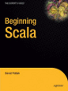
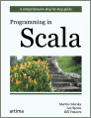
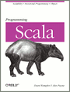

| Author: | Vassil Dichev |
|---|---|
| Date: | 08.10.2010 |
If I were to pick a language to use today other than Java, it would be Scala
—James Gosling
[...] if someone had shown me the Programming in Scala book [...] I'd probably have never created Groovy.
—James Strachan
If you need to use Java, you should be using Scala.
—Gilad Bracha
object HelloWorld { def main(args: Array[String]) { val audience = "Java2Days attendees" println("Hello, " + audience + "!") } }
| public | by default |
| static | singleton (object) |
| method | def |
| final | val |
| variable | var |
| return | optional |
class Person { private String name; private int age; public Person(String name, int age) { this.name = name; this.age = age; } public void setName(String name) { this.name = name; } public String getName() { return name; } public void setAge(int age) { this.age = age; } public int getAge() { return age; } }
class Person(var name: String, var age: Int)
case class Person(name: String, age: Int)
trait ObjectOriented { override def toString = "object-oriented " + super.toString } trait Functional { override def toString = "functional " + super.toString } class ProgrammingLanguage { override def toString = "language" } var scala = new ProgrammingLanguage with Functional with ObjectOriented // object-oriented functional language scala = new ProgrammingLanguage with ObjectOriented with Functional // functional object-oriented language
val list = List(1, 3) val digitNames = Map(2 -> "two", 4 -> "four") list(1) digitNames(2) list.apply(1) digitNames.apply(2)
myVar match { case s: String => "string: " + s case List(1, _*) => "list starting with 1" case Person("Martin Odersky", 53) => "Scala's father" case _ => } val digitNames: Int => String = { case 2 => "two" case 4 => "four" }
1.to(5) // Range(1, 2, 3, 4, 5) 1.to(5).filter{ i => i % 2 == 0 } // Vector(2, 4) 1.to(5).filter{ _ % 2 == 0 }.map{digitNames} // Vector(two, four)
val myActor = actor { loop { react { case s: String => println("Got: " + s) case 42 => println("""the answer to life the universe and everything""") case _ => println("Unknown type") } } } myActor ! "test" myActor ! 42 myActor ! 2.5
reverse("") must be empty 1 must beOneOf(1, 2, 3) list must have size(3)
(reverse("").must(be)).empty (1.must(beOneOf(1, 2, 3)) (list.must(have)).size(3)
class JSON extends JavaTokenParsers { def value = obj | arr | stringLiteral | floatingPointNumber | "null" | "true" | "false" def obj = "{"~repsep(member, ",")~"}" def arr = "["~repsep(value, ",")~"]" def member = stringLiteral~":"~value }

|
Beginning Scala |
|

|
Programming in Scala |
|

|
Programming Scala |
|
???
!!!
...